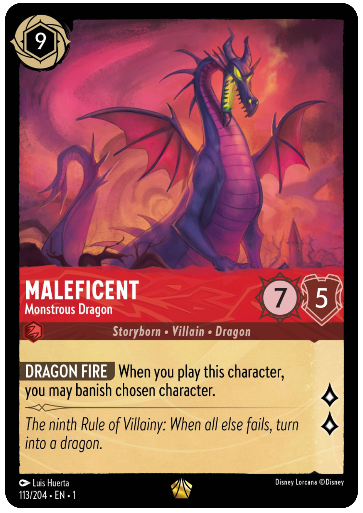

Deckbuilding Basics #1 - Deciding your deck archetypes
Before we start building a deck we need to decide the overall strategy, or archetype we want to play. While just putting a bunch of good cards in your deck can work sometimes, the strongest decks have a clear strategy they are working towards throughout the whole game.
In most card games the different archetypes are typically broken down into 3 main categories: aggro, control, and midrange.
Aggro
One of the more straightforward strategies, aggro decks just want to do one thing - gain lore. It doesn't matter how many cards your opponent draws or how much ink they have if you can just win first.
Cards like Lilo - Making a Wish, Gathering Knowledge and Wisdom and Olivia Flaversham - The Toymaker's Daughter are great examples of aggro cards. They don't really help at all when it comes to stopping the characters, items and locations your opponent has in play (often referred to as their "board") but they help you gain lore quickly.
Aggro decks win fast or lose fast, and are typically recommended to new players because they require the least knowledge about your opponent's cards. Your best strategies as an aggro player are relatively the same in every matchup - you're just hoping that you're fast enough at questing that they can't stop you. Typically an aggro deck will do little to no challenging and just focus on playing characters and questing every turn.
Sometimes you will find competitive players look down on aggro decks for being "easy" or "boring", but even if your plan is straightforward there is still decision-making and strategy required to be successful when playing an aggro deck. Aggro decks are important for keeping slow, powerful decks in check, and with a little luck on your side they have the potential to do well in any tournament. Some decks will really struggle finding ways to stop your characters fast enough, and especially if they have a bit of a slower start you can quickly secure your victory.
Control
Control decks want to control the board - banishing opposing characters, stealing lore and trying to take over the game. These decks have their top priority as stopping the opponent, and once that is done then they usually will have a few key cards that help them get to 20 lore as their "win conditions" once they have stopped the opponent.
Most control decks will run a large number of cards that are able to banish and stop the opponent's characters. Be Prepared is the perfect example of a control card, destroying everything on the board to reset things and regain control of what is happening.
These decks can be harder to build and play, as you will need to know what your opponents are planning so you have the right tools to stop them. If you think your opponents will be playing lots of little characters to quest quickly - better run board wipes like Be Prepared or Grab Your Sword to sweep them all away. If you're going up against opponents that are playing just a few very powerful characters capable of questing for a lot of lore by themselves like Tamatoa - So Shiny! you may be better off running targeted removal like World's Greatest Criminal Mind or Maleficent - Monstrous Dragon to stop them.
Often control decks start the game out slowly, playing cards to get extra ink or draw more cards to find their powerful cards. Once they play their big board wipes like Be Prepared to even the field though they can then take advantage of their extra cards and ink to keep stopping you while carefully gaining their own lore.
Midrange
Midrange decks have a strategy in the middle of aggro and control. Typically they will still play characters that they can get out relatively quickly and start questing with, but also have an element of control through powerful songs or characters with good stats for challenging.
Tinker Bell - Giant Fairy, Cri-Kee - Lucky Cricket, and Belle - Accomplished Mystic are all good examples of cards you might see in a midrange deck, as they help you fight back against opposing characters while also questing for multiple lore themselves.
Many of Lorcana's top decks will fit into the midrange category, with some leaning more towards the aggro side of things such as traditional Steelsong, and others being closer to a control deck such as Green/Steel Discard.
Matchups
Generally speaking, these three types of decks make a rock-paper-scissors style format, where aggro usually does well against control as it can go fast enough they can't stop them, but struggles against midrange decks that can quickly kill their stuff and quest themselves. Midrange decks are just slow enough though that often a control deck has time to take over the game.
The other thing that adds complexity to this is many cards support multiple strategies, so your deck has the potential to be the aggro or the control depending on things like who went first and what cards have been played.
A big part of becoming a good Lorcana player is learning how to evaluate the board and decide when you need to be the control, and when you should be the aggro. If two aggro decks go against each other and both just ignore the other and quest every turn. Unless they have a bad opening hand, whoever goes first is usually going to win. However, if the person on the draw can banish a few key characters and take over the board that may be just what it takes for them to win instead.
Midrange or Aggro?
Mr. Smee - Bumbling Mate has great stats as a 2 cost 3/3 for fighting for early control of the board, but questing for 2 each turn also makes him a great aggro option for gaining lore.